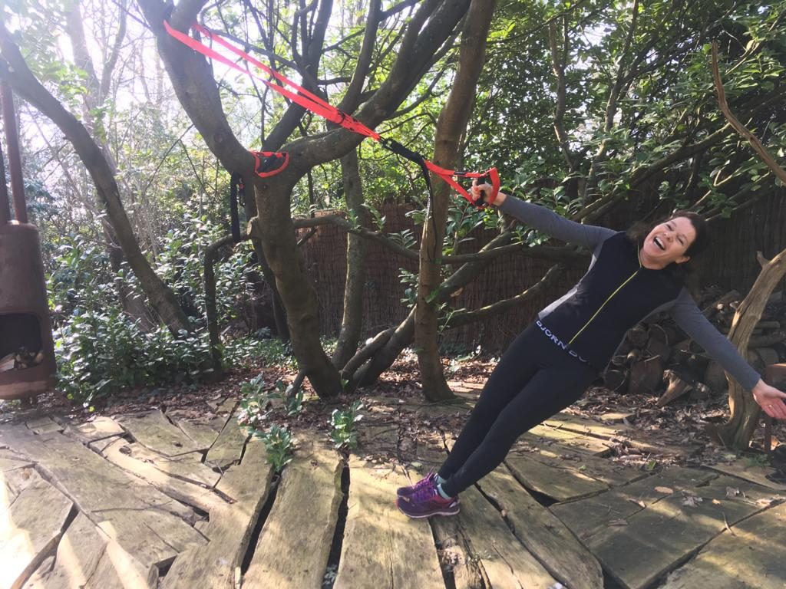
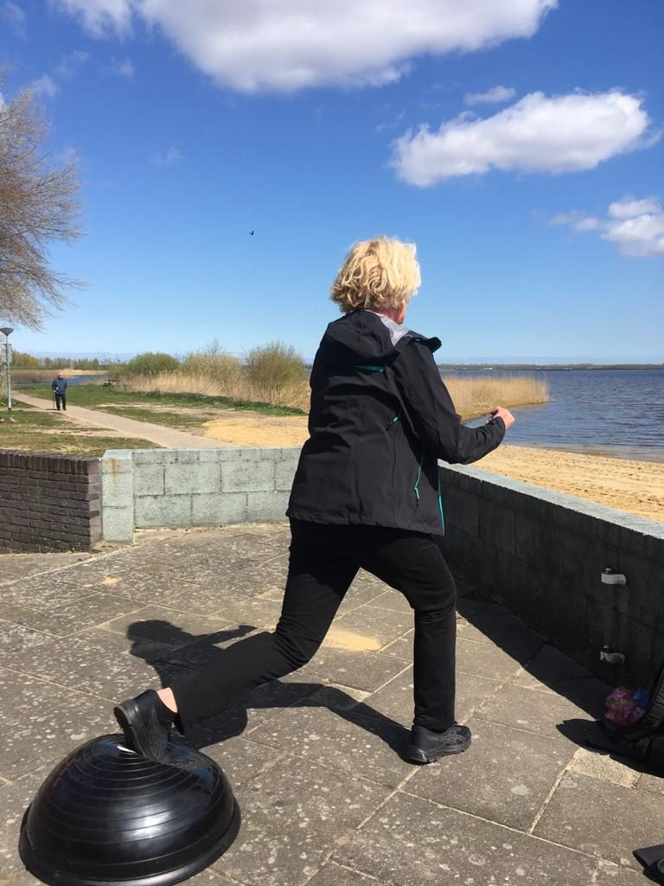
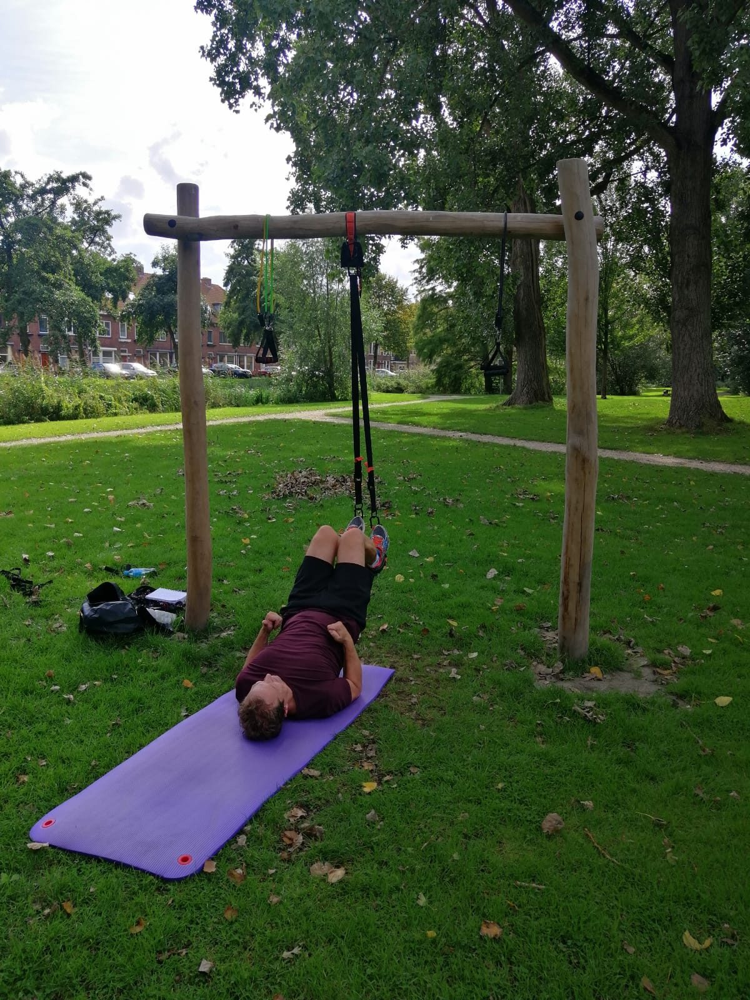
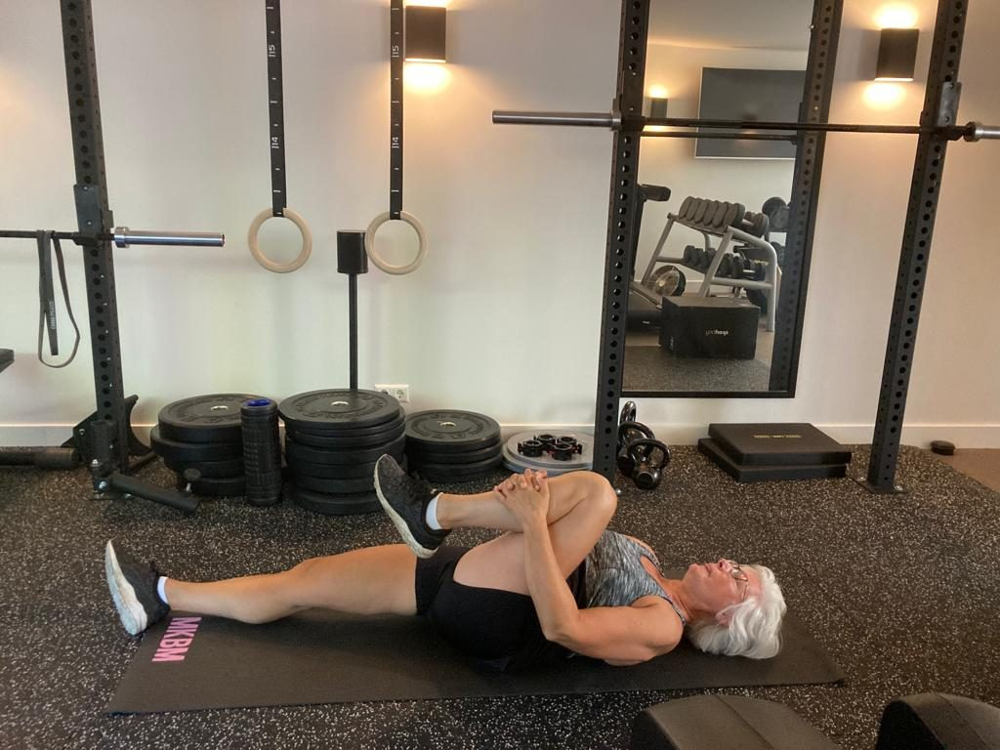

Banden of gewichten
Wat een weerstandsband wel kan en een halter niet, en waarom die vergelijking meestal verkeerd wordt gemaakt.
Lezen →Over banden tegenover gewichten, hoe lang materiaal meegaat, beginnen zonder iets, en waar je het allemaal laat.

Wat een weerstandsband wel kan en een halter niet, en waarom die vergelijking meestal verkeerd wordt gemaakt.
Lezen →
Levensduur per soort trainingsmateriaal, en waaraan je ziet dat een band, mat of ophangsysteem vervangen moet worden.
Lezen →
Zes weken trainen met alleen een stoel, een muur en een trap, en het punt waarop dat ophoudt te werken.
Lezen →
Opbergen bepaalt of trainingsmateriaal gebruikt wordt of stof vangt. Vier oplossingen die in een gewoon huis werken.
Lezen →Geen van de drie aanbieders hieronder verwacht dat je iets in huis hebt. Ze komen met wat nodig is en kijken pas daarna of aanschaffen zin heeft.